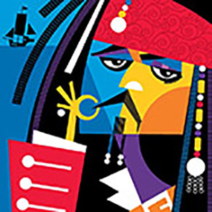

Pablo Lobato, born in Trelewem, Patagonia Argentina in 1970, is a graphic designer and illustrator.Not being very good at sports he used to spend long hours drawing superheros and medieval knights, instead of playing soccer like his friends.
In 1982 he drew his first portrait, an illustration of Cesar Luis Menotti, the coach of the national soccer team at that moment. Everybody seemed to like it, so Pablo decided that this was his thing. But he did not want to be a painter, he admired the artist Uderzo, not Cezanne, as Fine Arts was too much, but graphic design could be a good choice to keep on drawing while paying the bills.
My favourite work of Pablo Lobato so far, has to be his Captian Jack Sparrow
